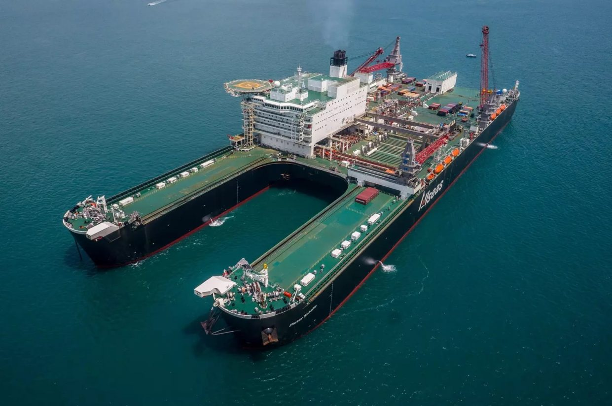

Pioneering Spirit
Длина: 382 метра
Pioneering Spirit — самое крупное в мире судно, предназначенное для монтажа, демонтажа и перевозки морских буровых платформ, а также для прокладки подводных трубопроводов.
Длина корабля составляет 382 метра, ширина — 124 метра, а водоизмещение — 900 тыс. тонн или 1 млн тонн при максимальной осадке. Это также самое крупное в мире судно по валовой вместительности — 403 342 тонны.
С декабря 2018 года по декабрь 2019 года Pioneering Spirit участвовал в строительстве газопровода «Северный поток — 2».